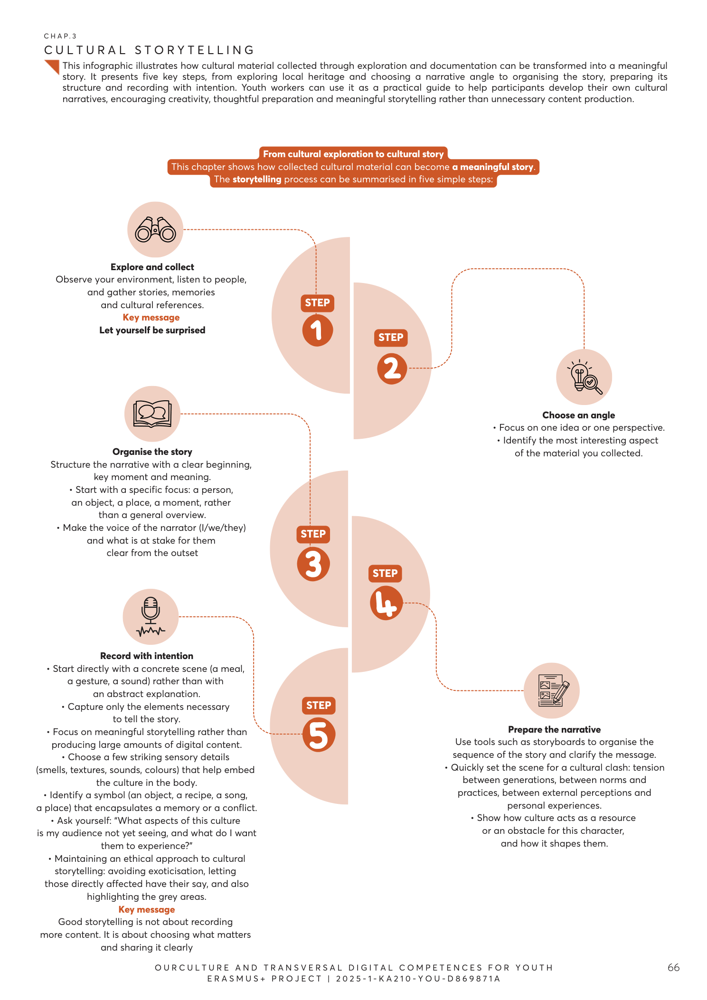

I N F O G R A P H I C S U M M A R Y

Visual summary of this chapter — click to enlarge or download.
Download infographic (PDF)Introduction
In Chapter 2, young people explored culture by observing their environment, interviewing people, and collecting stories, memories and local knowledge. The next step is to transform this material into meaningful stories. This chapter introduces cultural storytelling as a way of organising and sharing cultural experiences. Storytelling helps young people move from simply collecting information to creating narratives that others can understand, connect with and reflect on. In youth work contexts, storytelling allows participants to give meaning to what they have discovered. By selecting important elements, choosing a point of view and structuring a narrative, young people learn how to make cultural heritage visible and accessible. At this stage, participants can already consider their intended audience and a possible format, as these choices may influence how the story is structured. This chapter focuses on the creative and narrative process, not on technical production. It helps youth workers guide participants in answering key questions such as:
- What story do we want to tell?
- Why does it matter?
- For whom are we telling it?
- What is the best angle to approach it?
Through practical methods and workshops, participants learn how to transform collected cultural material into stories that can later be adapted into different media formats such as podcasts, blogs, short videos or digital exhibitions. In this way, storytelling becomes the bridge between cultural exploration (Chapter 2) and media production (Chapter 4).
DigComp 3.0 connection
This chapter mainly supports Digital content creation, helping young people select, structure and prepare cultural material for meaningful communication.
Learning objectives
By the end of this chapter, youth workers will be able to:
- understand storytelling as a way of organising and interpreting cultural experiences
- help young people transform collected cultural material into clear narratives
- support participants in identifying a strong angle, message and audience
- introduce simple storytelling methods adapted to non-formal education
- prepare participants to adapt their stories into digital formats in the next chapter.
Sections
- Section 1 | The power of storytelling
- Section 2 | Building a cultural narrative
- Section 3 | The key principles of effective cultural storytelling
- Section 4 | Practical workshop & case studies
Section 1 · Storytelling as cultural translation
Storytelling in youth empowerment
Why storytelling matters in youth work
Stories are one of the oldest ways humans share knowledge, experiences and values. Through stories, people explain the past, describe the present and imagine the future. Storytelling also involves making choices and interpreting reality. Youth workers should encourage participants to reflect on their point of view, what they choose to show, and what remains invisible.
In youth work, storytelling plays an important role because it allows young people to express their own perspectives and experiences. It also helps them connect personal stories with collective cultural heritage. When young people learn to tell stories, they develop important skills such as:
- expressing ideas and emotions
- listening to different perspectives
- interpreting cultural experiences
- communicating with different audiences
- building confidence in their own voice
Storytelling is therefore not only a communication tool. It is also a process of reflection and empowerment.
Storytelling as cultural translation
When young people tell a cultural story, they do more than simply repeat information. They select what is meaningful and present it in a way that others can understand. In this sense, storytelling can be seen as a form of cultural translation. Participants interpret cultural practices, memories and experiences and translate them into narratives that make sense for others. This is especially important when working with topics such as:
- local traditions
- family memories
- neighbourhood histories
- community experiences
- everyday cultural practices
Through storytelling, culture becomes something that can be shared, discussed and understood beyond the original context.
From cultural material to narrative
In Chapter 2, participants collected cultural material through observation, interviews and exploration. This material may include:
- personal stories
- memories shared by community members
- photographs, sounds or objects
- observations of everyday cultural practices
- information found in archives or online sources
However, collected material does not automatically become a story. Storytelling begins when participants start to:
- choose what is important
- organise the information
- identify a clear focus
- give meaning to what they discovered
This process transforms cultural information into a narrative that others can follow and connect with.

Section 2 · Building a cultural narrative
Narrative building
1. Choosing a clear angle
One of the most common challenges in storytelling is that participants try to talk about too many things at once. Instead, a strong cultural story usually focuses on one main idea or perspective. This is called the angle of the story. The angle helps answer questions such as:
- What is the most interesting aspect of this story?
- What do we want the audience to understand?
- What makes this story meaningful or unique?
For example: Instead of telling a general story about a neighbourhood, participants might focus on:
- how one street has changed over time
- the story of a local shop that everyone knows
- a place where young people usually meet
- a tradition that still exists today
By narrowing the focus, the story becomes more concrete and more engaging.
2. Identifying audience and purpose
Before telling a story, it is useful to think about who the story is for. A story told for local residents may be different from a story created for young people from another country.
Participants can reflect on questions such as:
- Who will listen to or read this story?
- What do we want them to understand or feel?
- What might be new or surprising for them?
- Which format could best serve this story and its audience?
For example: podcast, blog, short video, social media story or exhibition.
Clarifying the audience helps participants choose what information to include and how to present it. For example, when sharing local cultural stories with an international audience, it may be necessary to explain certain traditions or references that local people already know.
3. Structuring the story
Even a simple story benefits from a basic structure. Participants do not need complex storytelling theories. A simple narrative structure is often enough.
A cultural story can be organised in four steps:
- Beginning – Context
Introduce the place, person or situation. Help the audience understand where the story takes place.
- Focus – What is this story about?
Present the central element of the story: a person, a place, an object or a memory.
- Development – What happens or what is discovered?
Share observations, memories or experiences that reveal something interesting about the culture being explored.
- Meaning – Why does this story matter?
Explain what this story tells us about the community, the culture or the experience being shared.
This structure helps participants organise their ideas and avoid losing the audience
4. Revealing the visible and the invisible
One of the strengths of cultural storytelling is the ability to move from what we can easily see to what is less visible but equally important. Many cultural stories start with something tangible, such as:
- a place
- a traditional dish
- an object
- a local celebration
- a daily routine
However, behind these visible elements there are often deeper meanings:
- memories
- values
- identities
- changes over time
- hidden stories within the community
Encouraging participants to explore both the visible and invisible aspects of culture helps create richer and more meaningful stories.
5. Preparing the story for different formats
Participants do not need to make a final decision about the format at this stage, but considering a likely format can help them shape the story for its intended audience.
Some stories are particularly effective when told through voice and sound, especially when interviews, memories or conversations are central. Other stories may benefit from images or movement, for example when places, gestures or visual details play an important role. Some stories may also work well as written narratives, especially when reflection and explanation are important.
The purpose of this reflection is not to make a final decision yet, but to help participants understand that different stories may require different forms of expression.
The next chapter will explore how these stories can be developed into concrete media formats such as podcasts and blogs.

Section 3 · The key principles of effective cultural storytelling
Storytelling is not only about creativity. It is also about organising ideas and making choices. This section is theoretical and the following section translates these concepts into practical workshop activities. For young participants, the challenge is often not the lack of stories, but the difficulty of deciding what to include and how to present it. Youth workers can support this process by introducing simple storytelling methods that help participants move from raw material to a coherent narrative. The following approaches are easy to apply in youth work contexts and do not require technical expertise.
1. Start from real experiences
Cultural storytelling becomes meaningful when it is rooted in real experiences and observations. Participants should be encouraged to build their stories from:
- interviews conducted with community members
- observations made during local explorations
- personal memories or family traditions
- everyday cultural practices
- objects, places or sounds that carry meaning
Starting from real experiences helps ensure that stories remain authentic and relatable. Youth workers can remind participants that storytelling does not require extraordinary events. Very often, meaningful cultural stories emerge from ordinary situations.
2. Cultural storytelling should be ethical
Ethical storytelling involves telling stories in a conscious and responsible manner. It ensures that individuals and groups are portrayed respectfully, without reducing their complexity to clichés or stereotypes. It incorporates the concept of consent, ensuring that the stories shared-particularly those based on real-life experiences-are shared with the agreement of those concerned. This approach invites us to question our perspective and how our stories influence others’ perceptions. It encourages young people to tell stories in order to connect, understand and celebrate the diversity of experiences, rather than to exclude or judge.
3. Focus on concrete details
Stories become engaging when they include specific details. Instead of speaking in general terms, participants should be encouraged to describe:
- a specific place
- a particular moment
- a gesture or action
- an object or symbol
- a personal memory
For example, instead of saying: «People in our town celebrate many traditions.» Participants could describe: «Every year, on the first Sunday of spring, families gather in the town square to share homemade dishes.» Concrete details help the audience visualise the story and connect emotionally with it.
4. Select what matters most
When participants collect information, they often accumulate more material than they can use. This approach also supports responsible digital practices by limiting unnecessary recording and focusing on meaningful content. A key step in storytelling is therefore selection.
Youth workers can help participants identify:
- the most interesting moment
- the most meaningful quote from an interview
- the element that best represents the cultural story
A useful question to ask is: «If we could keep only three elements from everything we collected, what would they be?» This helps participants focus on the essential parts of the story.
5. Organise the story visually with a storyboard
A storyboard is a simple tool that helps participants organise their story step by step. Instead of writing the entire story immediately, participants create a visual sequence of the main elements.
A basic storyboard may include:
- The beginning – introducing the context or place
- The main focus – presenting the central person, object or situation
- The key moment – the most interesting discovery or memory
- The meaning – what this story tells us about the culture or community
Storyboards help participants:
- structure their ideas
- identify missing elements
- organise the flow of the narrative
They also make it easier to later adapt the story into different formats such as podcasts or blogs.
6. Connecting personal stories to broader culture
A strong cultural story often connects individual experiences to collective meaning.
Participants can reflect on questions such as:
- What does this story reveal about our community?
- Does this story represent a broader tradition or cultural practice?
- How does this story connect past and present?
Encouraging participants to move from personal experience to cultural meaning helps create stories that are both personal and relevant for others.
Section 4 · Practical workshops & case studies
The following workshops help participants move from collected cultural material to structured storytelling. The activities are designed for non-formal education contexts and can be adapted depending on group size, available time and participants’ experience.
The workshops follow a progressive approach:
- 1. Understanding what makes a story engaging
- 2. Choosing a clear angle
- 3. Structuring the story
- 4. Producing a short cultural story
Youth workers may choose to organise these activities during a single workshop or across several sessions. Storytelling is the foundation for digital storytelling formats such as podcasts, blogs or video narratives, which will be explored in the next chapter.
4.1. Case study 1 – Inspiring method
Rembobinez: Exploring local memory through images and questions
Context
The Rembobinez project was designed to help participants analyse a documentary film. The work with young people was based on a deck of cards, each presenting a question to analyse a different aspect of the film. The facilitators and the French teacher encouraged the young people to reflect on the notion of perspective, how the film looks at its subject, while also exploring emotions and personal responses. The workshops aimed both to provide media and image education and to create a space where young people’s voices were valued. They also served as a space for developing critical thinking.
How the method works
Participants work with a set of cards containing questions related to a film or an audiovisual archive. The questions invite participants to explore different aspects of storytelling, such as:
- personal memories connected to an image or place
- emotions or impressions triggered by a scene
- links between past and present
- different interpretations of the same cultural material
The cards act as conversation starters, encouraging dialogue and collective storytelling. Through discussion, participants begin to identify meaningful narratives that can later be developed into cultural stories.
Why this method works well with young people
This approach encourages active participation and multiple perspectives. Instead of giving a single interpretation, the activity invites young people to:
- express their own ideas and experiences
- listen to different viewpoints
- explore cultural heritage through discussion
- develop narrative thinking
By engaging with images and questions, participants gradually move from observation to interpretation and storytelling.
What youth workers can take from this example
This case study shows that storytelling can start with simple facilitation tools. Youth workers can use similar approaches to help participants explore cultural material, for example by using:
- discussion cards
- photographs or archive images
- objects connected to local culture
- personal memories shared by community members
These tools make it easier for participants to identify meaningful stories before producing media content.
Link with this chapter
This method illustrates an important step in cultural storytelling: interpreting and discussing cultural material before turning it into a narrative. It helps participants identify stories that can later be developed into podcasts, blogs or other digital storytelling formats explored in the following chapters.
4.2. Case study 2 – From objects to stories: A participatory storytelling method
This approach is inspired by participatory cultural practices developed in France, including those implemented by the National Museum of Immigration History, as well as popular education organisations such as Les Petits Débrouillards and CEMEA, which use objects, personal narratives and collective expression as tools for learning and storytelling.
 Les Petits Débrouillards – educational catalogue (PDF)www.lespetitsdebrouillardsgrandest.org/IMG/pdf/catalogues_pedagogique_ge.pdf
Les Petits Débrouillards – educational catalogue (PDF)www.lespetitsdebrouillardsgrandest.org/IMG/pdf/catalogues_pedagogique_ge.pdf- CEMEA – Culture and artistic practicescemea.asso.fr/les-champs-d-action/culture-et-pratiques-artistiques
- National Museum of Immigration History – Resourceswww.histoire-immigration.fr
Context
This case study is inspired by participatory cultural practices developed in France, including approaches used in institutions such as the National Museum of Immigration History, where personal objects are used to tell migration stories. Building on this approach, youth participants are invited to create symbolic objects or “totems” representing aspects of their cultural identity, family history or lived experiences. Each object becomes a support for storytelling, allowing participants to express their story in a tangible and visual way.
Learning objectives:
- Understand how objects can carry cultural and personal meaning
- Develop storytelling skills through symbolic representation
- Reflect on identity, memory and cultural heritage
- Build confidence in sharing personal or collective stories
- Connect individual experiences with broader social and cultural narratives
Activities and results:
Participants first explore examples of objects used in museums to tell personal or migration stories. They then:
- reflect on their own cultural background, memories or experiences
- select or create objects representing key aspects of their story
- assemble these elements into a personal or collective totem
- present and explain their object to the group
The result is a series of visual and narrative artefacts, each representing a unique cultural story.
Content and methodological approach:
The approach combines cultural exploration, symbolic thinking and storytelling. Participants move from:
- reflection (What is part of my story?)
- selection (Which elements represent it?)
- representation (How can I show it through an object?)
- narration (How do I explain its meaning?)
This method allows storytelling to emerge through both verbal and non-verbal expression, making it accessible to diverse groups.
Target group:
- Young people (15–30 years old)
- Youth groups in non-formal education settings
- Participants from diverse cultural or migration backgrounds
Key elements of digital and media culture:
- Understanding how stories can be communicated through different formats (not only text or speech)
- Developing narrative skills before digital production
- Reflecting on how cultural stories are represented and shared
- Preparing content that can later be adapted into digital formats (podcasts, blogs, short videos)
Impact:
- Increased confidence in expressing personal and cultural identity
- Stronger connection between individual stories and collective heritage
- Development of storytelling and communication skills
- Enhanced group cohesion through shared narratives
- Greater awareness of cultural diversity and multiple perspectives
Why this is important for Ourculture:
This approach reflects a key principle of the OURCULTURE project: starting from lived experiences to build meaningful cultural narratives. By using objects as storytelling tools, participants learn that stories do not only exist in digital formats, but can first be thought, shaped and embodied.
This method also prepares participants for the next steps of the guide:
- structuring narratives (Chapter 3)
- producing media (Chapter 4)
- sharing stories responsibly (Chapter 5)
It reinforces the idea that digital storytelling begins with intention, meaning and reflection, not with technology.

From storytelling to media creation
In this chapter, participants learned how to transform cultural material into meaningful narratives. Through storytelling methods and practical workshops, young people explored how to:
- identify the most important elements of a cultural story
- choose a clear narrative angle
- organise information into a structured story
- prepare a narrative before producing media content
Not all stories need to become complex productions. Simple, well-prepared stories are often the most impactful. This process is essential because strong digital storytelling begins with clear ideas and thoughtful preparation.
Once participants have developed a clear story, they can begin to think about how to share it with others. The next chapter explores how these stories can be transformed into digital media formats, such as podcasts and blogs.
Participants will learn how to produce and share their stories while continuing to apply the principles introduced in this guide: meaningful storytelling, accessibility and responsible use of digital tools.
Through these practices, young people can use digital media not only to communicate, but also to preserve cultural heritage, express their perspectives and contribute to their communities.